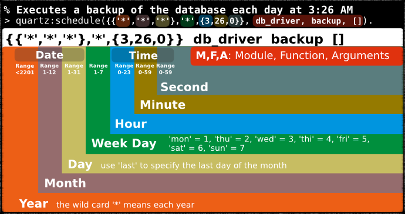

Navigation
next
QUARTZ
»
Erlang Time Management
¶
Quartz
is a pure
Erlang
library for time management. It is meant to be a
one stop library
providing an intuitive API for timing and job scheduling
on
Windows
and
UNIX-like
operating systems.
Overview
Requirements
QUARTZ Quick Start
QUARTZ Tutorial
Support Services
Bugs Report
License
Third Party Libraries

Table Of Contents
Overview
Requirements
QUARTZ Quick Start
QUARTZ Tutorial
Support Services
Bugs Report
License
Third Party Libraries
API Reference
Modules
Overview
quartz
quartz_sched
Navigation
next
QUARTZ
»